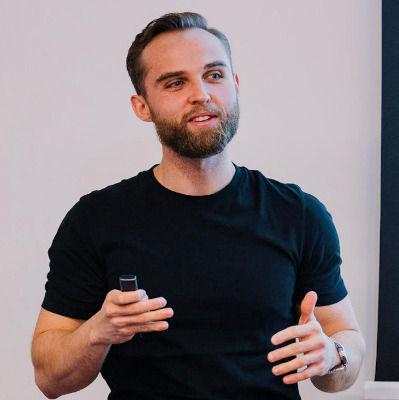

Zmiana pod presją: dlaczego koszt zmiany rośnie i jak go zatrzymać
„Legacy” często kojarzymy z wiekiem systemu albo przestarzałą technologią. W praktyce problem zaczyna się gdzie indziej: w rosnącym koszcie zmiany. Pod presją dostarczania powstają skróty, które z czasem zamieniają się w strukturę. Decyzje trafiają „tymczasowo” do przypadkowych miejsc, wspólne modele zaczynają znaczyć wszystko naraz, a granice odpowiedzialności rozmywają się między zespołami. Efekt to coraz większy coupling, coraz wyższy koszt koordynacji i zmiany, które zamiast być lokalne, przechodzą przez pół organizacji. W mojej prezentacji pokażę, dlaczego koszt zmiany rośnie oraz jak świadomie go obniżać na trzech poziomach. Organizacyjnie: przez dopasowanie architektury do sposobu pracy zespołów i jasne tryby współpracy. Semantycznie: przez szukanie naturalnych granic w języku domeny, rozróżnianie znaczeń tych samych pojęć w różnych kontekstach i nadawanie modelom realnych właścicieli. Technicznie: przez pracę z legacy małymi krokami — zabezpieczanie zachowania testami, znajdowanie spoin (seams), ochronę nowego modelu przed starym oraz wydzielanie pierwszego „bubble context” bez przepisywania całego systemu.

Łukasz Pięta
Senior Software Engineer i konsultant. Pomagam przekuwać niejasne potrzeby w proste, utrzymywalne rozwiązania - pragmatycznie, iteracyjnie i bez overengineeringu. Najwięcej satysfakcji daje mi modernizacja złożonych systemów legacy, w której upraszczam architekturę i obniżam koszt utrzymania.